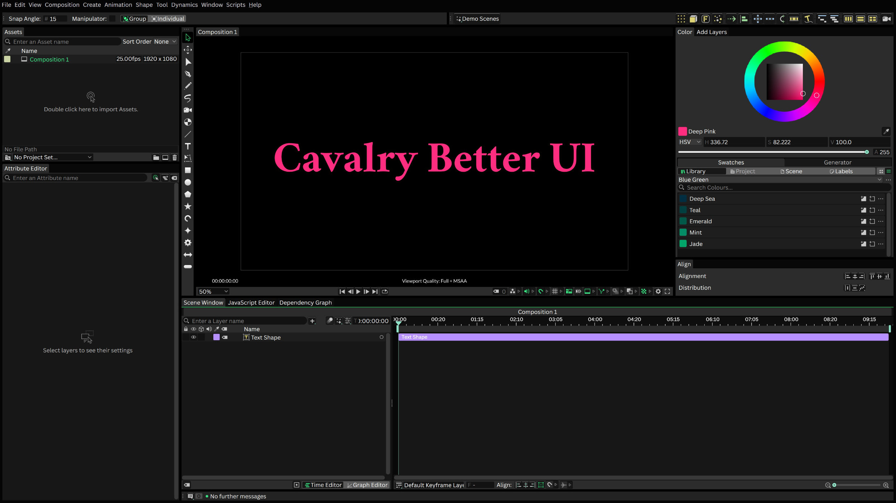
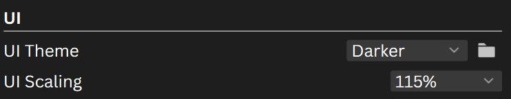

Part of the reason I turned my back on Adobe products is that their UI scaling is terrible. On my 4K monitor, After Effects was so tiny that I spent my days squinting at labels and keyframes. Cavalry at least has a font size setting, but the rest of the interface is still a bit small. So I sat down and wrote a little extension that hooks into Cavalry. Now you get a UI scaling setting that scales the whole interface. Additionally, you can now also theme the interface to your liking (my new default theme is now darker, improving the contrast of text elements). And last but not least, you can go fullscreen with the viewport. "Cavalry Better UI" bundles all of these improvements into a single small program.
This project is not affiliated with or endorsed by Cavalry.
{% include store-purchase-box.html %}
Window > Add Viewport) are now independent windows. Press F11 or click the button in the viewport's footer, and the viewport goes to fullscreen (with the composition zoomed to fit your monitor). This is especially helpful when you work with multiple monitors (or for projecting mapping 😅).
Cavalry has no plugin API for any of this, so getting here took a good amount of digging through Cavalry's internals (with a big help from Claude). Cavalry is built with the Qt framework. When you start Cavalry Better UI, it first finds Cavalry's executable and starts it. The extension then injects itself into Cavalry's process, and from there it can access the same Qt objects that Cavalry uses to build its interface. This is how it can scale the whole interface, recolor it with themes, and put the viewport to fullscreen.
Windows only. The extension relies on Windows internals and the Windows build of Cavalry. MacOS is not supported, and there are no plans for it at the moment, I'm sorry.
Tied to Cavalry's Qt version. This extension is built for the Qt version that ships with the current Cavalry release. A Cavalry update can update it or parts of its internal structure, which could break the extension. If that happens, please let me know and I'll fix it.
This project wouldn't exist without the Cavalry team, who built a really nice animation software. Also thanks to the Qt project for the framework that makes this possible.
Download Cavalry Better UI.exe and put it wherever you like, for instance on your Desktop. Double-click it to start Cavalry with the extension. If Cavalry is not installed in C:\Program Files\Cavalry, you are asked once where Cavalry.exe is.
The exe is not code-signed. This is a small project and those certificates are too expensive and too much of a hassle to set up (there is a lot of politics and bureaucracy involved). Therefore, Windows will warn you when you start the app for the first time (“Windows protected your PC” by SmartScreen, or an unknown publisher). To continue, click More info and then Run anyway. If you'd rather not run an unsigned program, don't buy this product.
Preferences > UI, you can choose a UI scaling from 90 % to 150 % (default 110 %), and a theme: Default, Darker or Nebula. The theme change requires a restart. The folder button next to the setting shows the file themes.ini. Open it in a text editor to add your own themes.
%APPDATA%\Cavalry Better UI and survive moving or replacing the exe. To remove the product, delete the exe and that folder, plus %LOCALAPPDATA%\Cavalry Better UI.
Initial beta release for Cavalry version 2.8. Older versions are not supported.